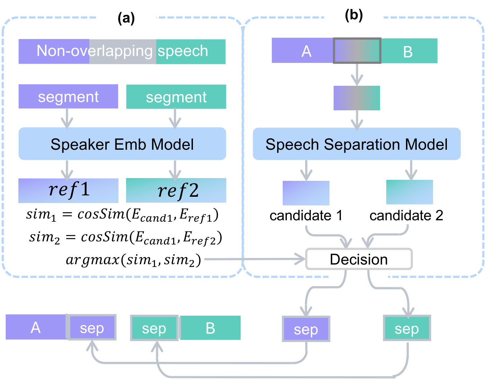

As the paradigm of AI shifts from text-based LLMs to Speech Language Models (SLMs), there is a growing demand for full-duplex systems capable of real-time, natural human-computer interaction. However, the development of such models is constrained by the scarcity of high-quality, multi-speaker conversational data, as existing large-scale resources are predominantly single-speaker or limited in volume. Addressing the complex dynamics of natural dialogue, such as overlapping and back-channeling remains a challenge, with standard processing pipelines suffering from diarization errors and ASR hallucinations. To bridge this gap, we present Sommelier, a robust and scalable open-source data processing pipeline designed for full-duplex models.
Sommelier is designed to transform raw, in-the-wild conversational audio into high-quality training corpora for full-duplex Speech Language Models (SLMs). Unlike traditional ASR pipelines that prioritize clean, non-overlapping speech, our design philosophy centers on preserving the chaotic yet rich dynamics of human dialogue—such as overlaps and backchanneling—while ensuring scalability for web-scale processing. The overall architecture is built as a modular framework where each component can be toggled or reconfigured, allowing researchers to adapt the trade-off between data purity and conversational authenticity.
Since collected radio and podcast data vary in format and volume, we convert all audio to a standard format (16kHz, 16-bit, Mono) and perform loudness normalization to −20dBFS using pydub and librosa.
To prevent out-of-memory issues, we split long audio files into units of less than 5 minutes using a VAD model to cut at silence intervals.
For speaker diarization, instead of the commonly used Pyannote speaker-diarization-3.1, we adopt Sortformer from NVIDIA, which demonstrates superior robustness in capturing very short utterances such as backchanneling.
Conversational audio features frequent turn changes and short utterances. We categorize overlapping scenarios into four distinct cases and select Case 4 as our baseline, which allows both segments to contain the overlap based on speaker identity, preserving full information. We incorporate a module that performs two-speaker separation (SepReformer) on the overlapped intervals with speaker identity matching via cosine similarity of speaker embeddings.

Four distinct cases for handling overlapping speech segments.
Audio from radio broadcasts or dramas often contains background music (BGM). We employ PANNs to estimate the probability of background music presence in each segment. If the probability exceeds 0.3, we apply the Demucs model to extract the vocal track. Since music removal can degrade speech quality, we selectively apply it only to segments identified by PANNs, minimizing unnecessary processing.
Relying on a single ASR model poses significant risks due to hallucinations, particularly in silent or noisy segments. We employ a ROVER (Recognizer Output Voting Error Reduction) ensemble strategy combining outputs from three distinct SOTA models (Whisper, Canary, Parakeet).
We align transcripts at the word level and apply a prioritized majority voting scheme: a word is accepted if predicted by at least two models. Residual hallucinations are further pruned using a RepetitionFilter that discards samples with excessive n-gram repetitions.
We validated the pipeline by performing LoRA fine-tuning on moshiko-pytorch-bf16 using 83 hours of Sommelier-processed data and evaluated using the Full-Duplex-Bench 1.0. The fine-tuned model shows significant improvements across Backchanneling, Smooth Turn-Taking, and User Interruption handling.
| Model | Pause Handling | Backchannel | Smooth Turn Taking | User Interruption | ||||||
|---|---|---|---|---|---|---|---|---|---|---|
| Synth. TOR ↓ | Candor TOR ↓ | TOR ↓ | Freq ↑ | JSD ↓ | Candor TOR ↑ | Latency ↓ | TOR ↑ | GPT-4o ↑ | Latency ↓ | |
| Moshi | 0.985 | 0.980 | 1.000 | 0.001 | 0.957 | 0.941 | 0.265 | 1.000 | 0.765 | 0.257 |
| Moshi + Sommelier | 1.000 | 1.000 | 0.291 | 0.052 | 0.630 | 1.000 | 0.344 | 0.858 | 3.684 | 1.065 |
Full-Duplex-Bench 1.0 results. Arrows indicate whether higher (↑) or lower (↓) values are better.
We compare Sortformer against the Pyannote 3.1 baseline on VoxConverse. Sortformer consistently outperforms across all metrics, with the most pronounced gains in short utterances and rapid turn-taking—regimes critical for full-duplex conversational modeling.
| Model | DER (%) | JER (%) | DER (≤1.0s, %) | DER (turn, %) |
|---|---|---|---|---|
| Pyannote 3.1 | 8.40 | 17.68 | 20.21 | 0.051 |
| Sortformer | 7.16 | 14.69 | 16.87 | 0.006 |
Diarization model ablation on VoxConverse (common subset, ≤4 speakers). Lower is better.
We evaluate overlap separation quality across varying Signal-to-Interference Ratios (SIR) and overlap ratios using 900 synthesized samples from LibriSpeech. Our separation method (Sep) consistently outperforms the baseline across all conditions, with perceptual quality (UTMOS) closely approximating the Oracle upper bound.
| SIR | OVL | WER (%) ↓ | STOI ↑ | UTMOS ↑ | ||||||
|---|---|---|---|---|---|---|---|---|---|---|
| Ori | Sep | Orc | Ori | Sep | Orc | Ori | Sep | Orc | ||
| 0 dB | 0.2 | 10.5 | 6.1 | 4.8 | .961 | .982 | 1.00 | 3.04 | 3.53 | 3.88 |
| 0.5 | 13.9 | 7.9 | 5.8 | .888 | .969 | 1.00 | 2.27 | 3.32 | 3.87 | |
| 1.0 | 48.9 | 15.6 | 5.3 | .778 | .913 | 1.00 | 1.70 | 3.02 | 3.84 | |
| 5 dB | 0.2 | 11.3 | 7.6 | 5.3 | .961 | .978 | 1.00 | 3.06 | 3.47 | 3.87 |
| 0.5 | 18.8 | 7.1 | 4.3 | .887 | .971 | 1.00 | 2.34 | 3.39 | 3.91 | |
| 1.0 | 52.5 | 9.1 | 4.0 | .761 | .936 | 1.00 | 1.79 | 3.12 | 3.91 | |
| 10 dB | 0.2 | 12.6 | 7.0 | 5.6 | .961 | .980 | 1.00 | 3.26 | 3.60 | 3.98 |
| 0.5 | 29.7 | 10.1 | 5.2 | .877 | .956 | 1.00 | 2.58 | 3.21 | 3.86 | |
| 1.0 | 51.0 | 13.8 | 4.8 | .754 | .919 | 1.00 | 2.17 | 3.01 | 3.92 | |
Speech quality for Original, source Separated, and Orc (Oracle). Highlighted cells show our method.
Our three-model ensemble achieves a significant WER improvement of approximately 37% on LibriSpeech Test Other, reducing the error rate from 6.26% to 3.92% compared to standalone Whisper Large v3. The ensemble also successfully corrects Whisper hallucinations such as repetitive generation.
| Dataset | Model | WER (%) | Time (s) |
|---|---|---|---|
| LibriSpeech Test Clean | Whisper | 3.63 | 0.39 |
| MoE (Ours) | 2.04 | 1.40 | |
| LibriSpeech Test Other | Whisper | 6.26 | 0.35 |
| MoE (Ours) | 3.92 | 1.27 | |
| TEDLIUM3 Test | Whisper | 12.19 | 0.36 |
| MoE (Ours) | 10.66 | 1.33 |
Whisper refers to Whisper-large-v3.
Running a single process on an A100 (80GB) yields a total Real-Time Factor (RTF) of 0.1746. With peak memory usage of 23GB, three concurrent processes per GPU effectively lower the RTF to 0.0443. Processing 10,000 hours of audio using eight A100 GPUs takes approximately 55 hours.
| Stage | Processing Time (s) | RTF |
|---|---|---|
| Audio Duration | 120.00 | — |
| VAD + Sortformer | 1.91 | 0.0159 |
| SepReformer Separation | 0.15 | 0.0013 |
| ASR Ensemble | 13.91 | 0.1159 |
| FlowSE Denoising | 4.99 | 0.0416 |
| Total | 20.95 | 0.1746 |
Processing time breakdown for a 120-second audio sample on a single A100 GPU.
Explore the Sommelier pipeline output: original audio, separated speaker segments, and transcripts.
Episode: Dr. Beth Harris and Dr. Steven Zucker of Smarthistory
From Open Minds from Creative Commons · Apple Podcasts · Licensed under Creative Commons
Click any segment to play. The timeline syncs with the original audio.
Click a segment on the timeline or transcript to play it here.
A second example from a different podcast episode.
Episode: Test English with Overlap (2min)
Click any segment to play. The timeline syncs with the original audio.
Click a segment on the timeline or transcript to play it here.